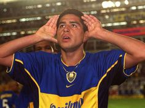
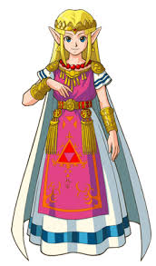
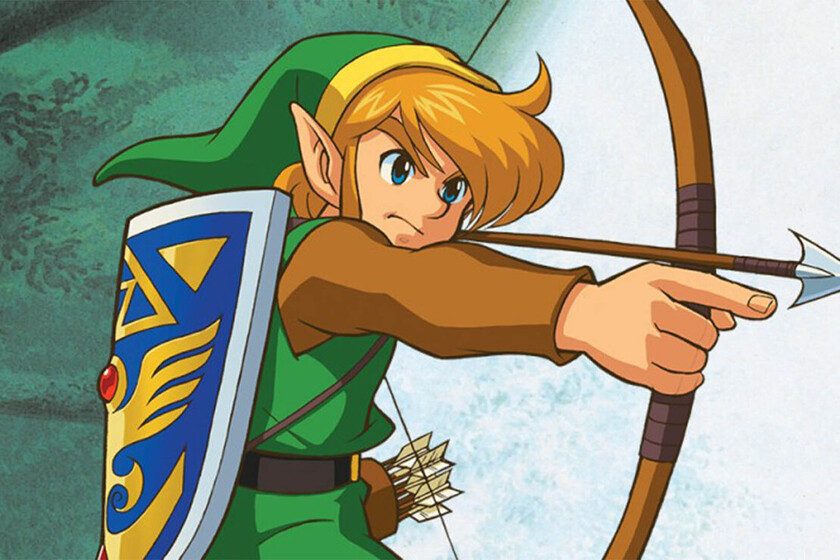

me fue dificil encontrar similitudes directas entre un equipo de fútbol como Boca Juniors y una franquicia de videojuegos como The Legend of Zelda, ya que son dos entidades muy diferentes con propósitos y características distintas. Sin embargo, si buscamos analogías o puntos en común más abstractos, podríamos mencionar algunos aspectos: Legado y trascendencia: Tanto Boca Juniors como The Legend of Zelda tienen un legado importante y han trascendido en sus respectivas áreas. Boca Juniors es uno de los clubes de fútbol más reconocidos y exitosos de Argentina y el mundo, mientras que The Legend of Zelda es una de las franquicias de videojuegos más icónicas y queridas, con décadas de historia. Pasión de los aficionados: Tanto los seguidores de Boca Juniors como los fanáticos de The Legend of Zelda muestran una pasión inquebrantable por sus respectivas entidades. Los hinchas de Boca llenan el estadio La Bombonera con un ambiente electrizante en cada partido, mientras que los jugadores de Zelda esperan con ansias cada nuevo lanzamiento de la saga. Carismáticos líderes: Ambos tienen líderes carismáticos que han dejado una huella significativa. Boca Juniors ha tenido ídolos futbolísticos como Diego Maradona, Juan Román Riquelme, entre otros. Por otro lado, The Legend of Zelda ha contado con el icónico personaje de Link, quien es el protagonista en la mayoría de los juegos. Evolución a lo largo del tiempo: Tanto Boca Juniors como The Legend of Zelda han evolucionado con el tiempo. Boca ha tenido diferentes épocas de gloria y momentos de transformación, mientras que The Legend of Zelda ha visto cambios en la jugabilidad y la estética gráfica a lo largo de sus numerosas entregas. Admiración global: Ambos tienen una base de fanáticos global. Boca Juniors cuenta con seguidores apasionados en todo el mundo, y The Legend of Zelda ha conquistado el corazón de jugadores de todas las edades y nacionalidades. En última instancia, aunque no hay similitudes directas entre Boca Juniors y The Legend of Zelda en términos de sus características intrínsecas, ambas entidades han dejado una marca indeleble en la cultura popular y tienen una base de seguidores apasionados y leales.
Juan Román Riquelme:uan Román Riquelme (San Fernando, 24 de junio de 1978) es un exfutbolista argentino, y actual vicepresidente y director deportivo del Club Atlético Boca Juniors.5 Un emblema del "clásico número 10", Riquelme se destacó como uno de los mejores jugadores argentinos de todos los tiempos y más aclamados mediocampistas de su generación, y uno de los últimos referentes de su posición.6789 Además, es ampliamente nombrado como el mejor jugador de la historia de Boca Juniors y una de sus más importantes figuras,101112 debido a su desempeño por 13 temporadas (1996-2014) en el club, en las que consiguió ganar tres Copas Libertadores de América y una Copa Intercontinental, entre otros títulos

Martin "El loco"Palermo:Martín Palermo (La Plata, 7 de noviembre de 1973) es un ex-futbolista profesional y actual entrenador argentino. Actualmente dirige al Club Atlético Platense de la Primera División de Argentina. Como jugador, se desempeñaba en la posición de delantero centro, donde llegó a destacarse como uno de los mejores y más icónicos de la historia de Boca Juniors y del fútbol argentino.2345 Es el 3° goleador de todos los tiempos en clubes del fútbol argentino, con 272 goles entre torneos oficiales de AFA y copas internacionales, sólo superado por Ángel Labruna y Arsenio Erico.6 Fue nombrado como futbolista del año en Sudamérica en 1998 e incluido en el Equipo Ideal de América en 1998 y 2000.7 Además, ha llamado la atención de diversos medios de comunicación por haber protagonizado situaciones deportivas de características extraordinarias y también por haber mostrado una gran voluntad de recuperación ante circunstancias adversas, tanto deportivas como personales
Princesa Zelda:Es una joven, perteneciente a la ficticia raza hyliana. Es la princesa del reino de Hyrule y, desde que se cumple la leyenda en The Legend of Zelda: Ocarina of Time y la Trifuerza se divide, la poseedora del fragmento de la Sabiduría. Es la encarnación mortal de la diosa Hylia.
Zelda no siempre es el mismo personaje en todos los juegos. Esto se debe a que fue maldecida por el Heraldo de la Muerte, el rey de los Demonios,quien obligó a los descendientes de la Encarnación de la Diosa Hylia, llamada Zelda, a enfrentarse a la Encarnación del Odio del Heraldo sin descanso durante toda la eternidad.(El Alma del Héroe, Link, reencarnará una y otra vez para detener a la Calamidad, pues es su cometido).

Link:es el nombre del protagonista de The Legend of Zelda. Es el Héroe Elegido por las Diosas, portador de la Espada Maestra y representante de la Trifuerza del Valor. Una vez iniciada su aventura, Link se convierte en un héroe legendario después de salvar a Hyrule de las fuerzas malignas ocasionadas por Ganon (también conocido como Ganondorf). En gran parte de su viaje, consigue distintas armas y objetos con los que logra enfrentarse a sus enemigos, además de también ayudarle a completar las diversas mazmorras que visita

En esta pagina web de estilo blog me dedique a buscar similitudes entre mi club sudamericano favorito el cual es el club deportivo boca Jrs y mi videojuego favorito:The legend of zelda
El Club Atlético Boca Juniors es una entidad deportiva argentina, con sede en el barrio de La Boca, Buenos Aires. Fue fundado el 3 de abril de 1905 por seis vecinos adolescentes hijos de italianos. El fútbol masculino es su disciplina más destacada, aunque también compite a nivel profesional, nacional e internacionalmente, en baloncesto, voleibol, futsal, fútbol femenino y balonmano mientras que deportes como el boxeo, judo, karate, taekwondo, gimnasia rítmica y gimnasia artística se practican a nivel amateur. Actualmente se desempeña en la Liga Profesional de Fútbol Argentino. Boca Juniors participa de la Primera División Argentina desde 1913 y, a partir del Torneo Inicial 2013, se convirtió en el único club que disputó todas las temporadas en Primera División desde el comienzo del profesionalismo en 1931. Además, es el equipo con mayor cantidad de partidos disputados.6 A partir del 8 de junio de 2015, Boca Juniors batió el récord de mayor permanencia ininterrumpida en Primera División, con 37 312 días.7 El equipo juega sus partidos como local en el estadio Alberto J. Armando, conocido mundialmente como «La Bombonera»; allí también ha sido localista en numerosas ocasiones la Selección Argentina de fútbol, donde mantiene un invicto histórico en partidos oficiales. A nivel local, el club cuenta con 35 campeonatos de liga de Primera División8 y 17 copas nacionales (récord argentino), entre las que se destacan cuatro ediciones de la Copa Argentina (máximo ganador del certamen: 1969, 2011-12, 2014-15 y 2019-20) y dos ediciones de la Copa de la Liga Profesional (máximo ganador del certamen: 2020, 2022).9 También posee un título honorífico de la era amateur: la Copa de Honor, obtenida en 1925; un reconocimiento de la AFA a su exitosa gira por Europa en dicho año.10 A nivel internacional, es el tercer club con más títulos oficiales en el mundo (22), entre los cuales posee 18 a nivel confederativo e interconfederativo (FIFA y Conmebol) y 4 copas rioplatenses (AFA-AUF); y es el club con más títulos internacionales oficiales en toda América. Asimismo, es el máximo campeón de la Copa Intercontinental (3) a nivel mundial, junto con Peñarol y Nacional de Uruguay, Milan de Italia y Real Madrid de España. Además, es el club de América con más finales de copas internacionales confederativas e interconfederativas con 29 (3.º a nivel mundial, detrás de las 42 del Real Madrid y las 33 del Milan).11 Inclusive, es el club récord de finales de Copa Libertadores de América (11), y también es el segundo club con mayor cantidad de Libertadores ganadas con seis, detrás de Independiente, que tiene siete. Sumando torneos nacionales e internacionales, es el club más exitoso y con mayor cantidad de títulos en la historia del fútbol argentino: 74 títulos oficiales, lo cual, lo convierte en el club más campeón del país. A su vez, es uno de los equipos más exitosos en el profesionalismo, y también del amateurismo, solamente superado en esta era por el extinto Alumni y Racing Club. Inclusive, es el único club del país en haber logrado al menos un título por década y uno de los dos equipos argentinos (junto con Racing) que más veces salió campeón de forma invicta: 5 (en 1919, 1924, 1926, 1998 y 2011).12 Al mismo tiempo, fue el segundo club argentino (por detrás de Racing) en alzarse con cuatro títulos oficiales en un solo año, al proclamarse campeón de la Primera División de Argentina, de la Copa Dr. Carlos Ibarguren, de la Copa de Competencia Jockey Club y de la Cup Tie Competition, todo en el año 1919 (precisamente, estos fueron los primeros cuatro campeonatos obtenidos en la historia del club).13
es una popular serie de videojuegos de aventuras creada por el diseñador japonés Shigeru Miyamoto y desarrollada y publicada por Nintendo. La serie ha sido una parte icónica de la cultura de los videojuegos desde su debut en 1986. Aquí tienes una breve descripción de su historia y algunos puntos clave: El primer juego: "The Legend of Zelda" fue lanzado para la consola Nintendo Entertainment System (NES) en 1986. El jugador asume el papel de Link, un joven guerrero, y debe rescatar a la Princesa Zelda de las garras del malvado hechicero Ganon. A lo largo del juego, Link recolecta piezas de la Trifuerza de la Sabiduría para enfrentar a Ganon y restaurar la paz en el reino de Hyrule. La Trifuerza: Uno de los conceptos centrales de la serie es la Trifuerza, un poderoso artefacto mágico que otorga poder infinito a quien la posea. Está compuesta por tres partes: la Trifuerza del Poder, la Trifuerza de la Sabiduría y la Trifuerza del Valor. Estos tres fragmentos representan respectivamente el poder, la sabiduría y el valor, y su importancia se destaca en toda la saga. La Cronología: Con el lanzamiento de más juegos, la serie "The Legend of Zelda" se convirtió en una compleja saga con una cronología diversa. Nintendo lanzó oficialmente una línea de tiempo dividida en tres ramas diferentes: la línea de tiempo de "Ocarina of Time" (donde se divide en tres líneas distintas después de un acontecimiento crucial en ese juego), la línea de tiempo de "The Wind Waker" y la línea de tiempo de "A Link to the Past." Personajes icónicos: Además de Link, Zelda y Ganon, la serie presenta una amplia gama de personajes memorables, como la hada Navi, el hada compañera de Link en "Ocarina of Time"; Impa, la protectora de la princesa Zelda en varias entregas; y Midna, la misteriosa compañera de Link en "Twilight Princess". Juegos populares: A lo largo de los años, la serie ha experimentado un éxito continuo y ha lanzado varios títulos aclamados por la crítica y el público. Algunos de los juegos más destacados incluyen "A Link to the Past," "Ocarina of Time," "Majora's Mask," "The Wind Waker," "Twilight Princess," "Breath of the Wild" y muchos más. Impacto en la industria: "The Legend of Zelda" ha dejado una huella significativa en la industria de los videojuegos y se ha convertido en una de las franquicias más influyentes y queridas. Ha inspirado a generaciones de jugadores y ha sido reconocido por su diseño de mundo abierto, puzles creativos, jugabilidad innovadora y música memorable. La saga "The Legend of Zelda" ha tenido un impacto duradero en la cultura popular y sigue siendo una de las franquicias más queridas y emocionantes en el mundo de los videojuegos. Cada entrega aporta nuevas historias y aventuras al vasto universo de Hyrule y más allá.